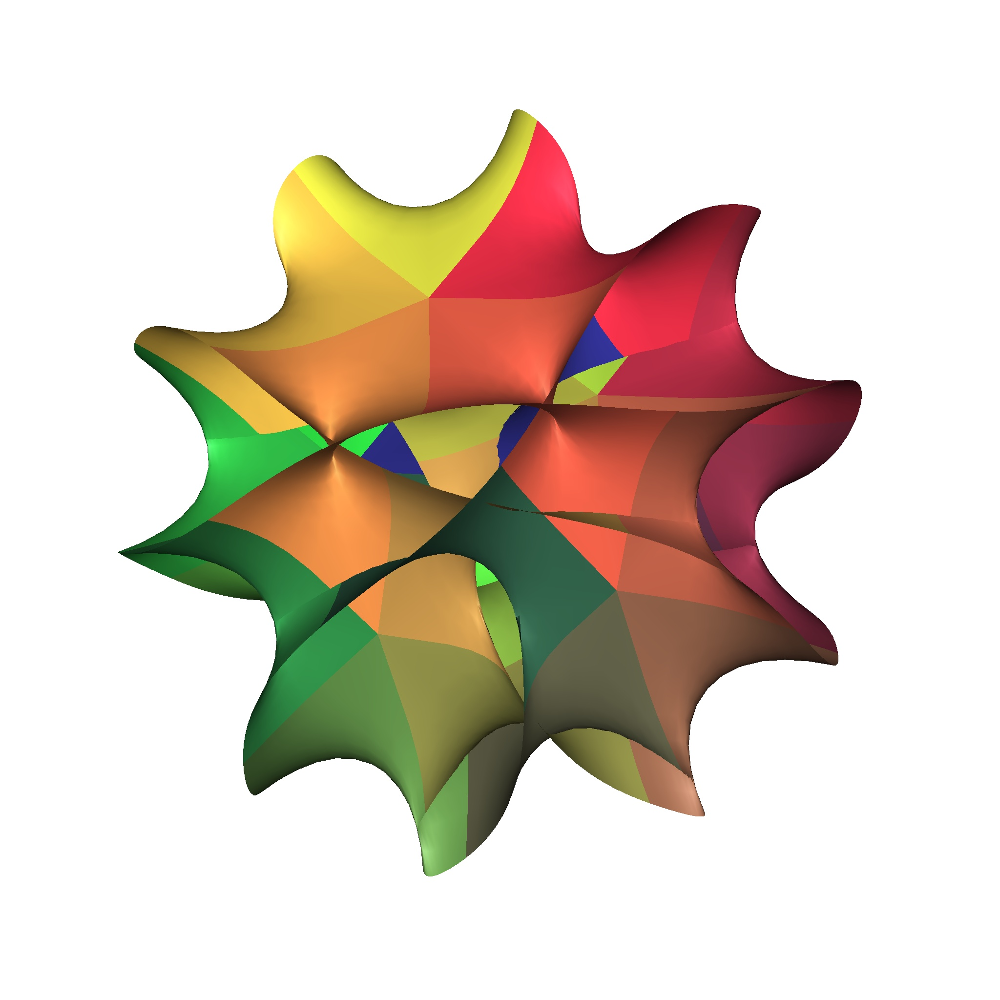

Assistant Professor of Mathematics
Institute for Theoretical Sciences · Westlake University

I am an Assistant Professor of Mathematics in the Institute for Theoretical Sciences at Westlake University, where I have been since September 2021. I am a member of the Differential Geometry Group.
Before joining Westlake, I was a Golomb Visiting Assistant Professor of Mathematics at Purdue University (2018–2021). I received my Ph.D. in Mathematics from the University of Wisconsin–Madison in 2018, under the supervision of Jeff A. Viaclovsky.
My research lies in Differential Geometry, with a particular focus on Kähler Geometry. I am interested in canonical metrics on Kähler manifolds, including Kähler–Einstein metrics, Kähler–Ricci solitons, weighted constant scalar curvature Kähler (cscK) metrics, and scalar-flat Kähler ALE surfaces. My work studies the connections between geometric PDEs, algebraic stability conditions, and degenerations of algebraic varieties, often through the lens of the Yau–Tian–Donaldson conjecture and its generalizations.